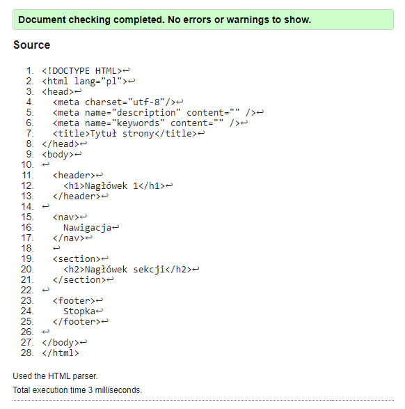
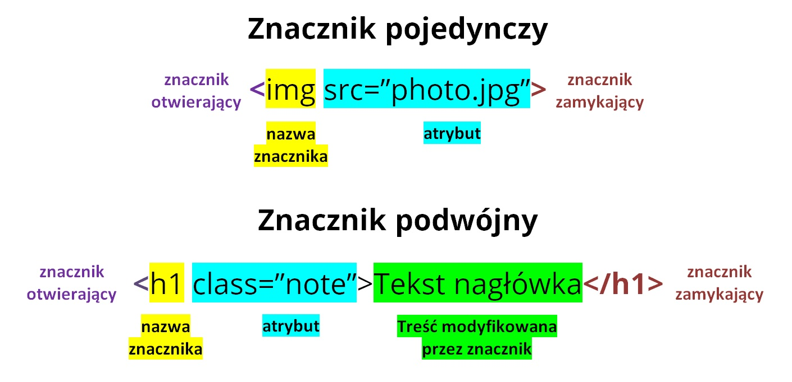

HTML – podstawy
Najważniejsze informacje o budowie stron internetowych
Co to jest HTML?
HTML (HyperText Markup Language) to język znaczników używany do tworzenia struktury stron internetowych. Nie jest językiem programowania – opisuje jedynie zawartość strony.
Podstawowa struktura dokumentu HTML

<!DOCTYPE html>
<html>
<head>
<title>Tytuł strony</title>
<meta charset="utf-8">
</head>
<body>
Treść strony
</body>
</html>
Doctype i meta dane
<!DOCTYPE html>
Informuje przeglądarkę, że dokument jest napisany w HTML5.
<meta>
Znaczniki meta zawierają informacje o stronie, np. kodowanie, autor, opis strony czy ustawienia responsywności.
Podstawowe pojęcia
Przeglądarka – program (np. Chrome, Firefox), który wyświetla strony WWW.
Strona internetowa – pojedynczy dokument HTML.
Witryna – zbiór stron internetowych połączonych linkami.
Portal – rozbudowana witryna z wieloma usługami (np. wiadomości, poczta).
Wortal – portal tematyczny skupiony na jednej dziedzinie.
Parser HTML – mechanizm przeglądarki interpretujący kod HTML.
Walidator – narzędzie sprawdzające poprawność kodu HTML.
Walidator HTML: W3C Validator
Jeżeli będziesz miał błędy na walidatorze to ucinane są punkty!
Znaczniki HTML
Znaczniki kontenerowe (lub inaczej podwójne) – mają znacznik otwierający i zamykający, np. <p></p>
Znaczniki pojedyncze – nie mają zamknięcia, np. <br>, <img>

Zasady poprawnego pisania HTML
- Nie krzyżuj znaczników (np.
<b><i></b></i>– błąd) - Zamykaj znaczniki kontenerowe
- Używaj małych liter
- Wartości atrybutów zapisuj w cudzysłowie
- Znaki specjalne zapisuj jako encje (np. < >)